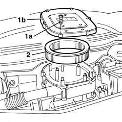
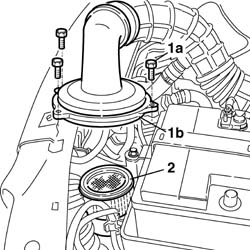
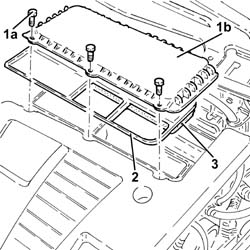
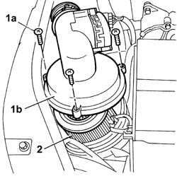
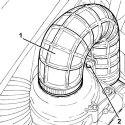
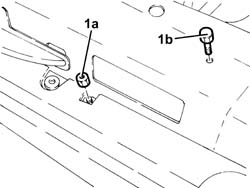
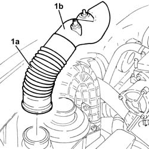
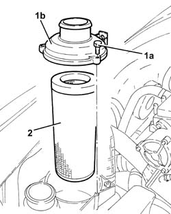
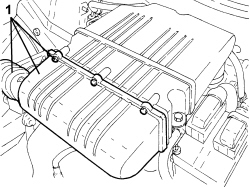
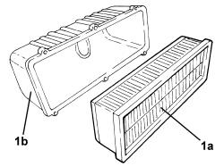

1048A14 air cleaner filtering element - replace.
- Path
- Procedures > 10 ENGINE > 1048 ENGINE AIR SUPPLY CIRCUIT > 1048A VACUUM AIR CIRCUIT > 1048A14 air cleaner filtering element - replace.
- Kind
- repair procedure (removal / refitting; the operation number is the code)
- Applies to
- all engines; all production periods
- Interactive page
- https://sloeber94.github.io/elrnDB-fDbl/en/#/2584237
Applies to: engines: 1.2 8v; all production periods
1. Undo the fixing bolts (1a) and remove the filter element cover (1b).
2. Remove the filter element.

Applies to: engines: 1.6 16v; all production periods
Fit the new filter element.
Position the protective cover and tighten the fixing bolts.
Applies to: engines: 1.6 16v; all production periods
 Removing
Removing
 Refitting
RefittingDisconnect the negative battery terminal.
1. Unscrew bolts (1a) securing air filter case cover (1b), then place the cover with air sleeve to one side.
2. Remove the filter element.

Applies to: engines: 1.6 16v; all production periods
Refitting
RemovingFit the new filter element.
Fit the air filter casing cover with air sleeve.
Connect the negative battery terminal.
Applies to: engines: 1.3 JTD 16V; all production periods
Removing
Refitting1. Undo the bolts (1a) and remove the air filter cover (1b).
2. Remove the seal.
3. Remove the air cleaner filter element.

Applies to: engines: 1.3 JTD 16V; all production periods
Refitting
RemovingPosition a new air cleaner filter element in its housing.
Place the gasket in its seat.
Place the air filter cover back in its housing and secure it using the bolts.
Applies to: engines: 1.9 DIESEL; all production periods
Removing
Refitting1. Undo the bolts (1a) fixing the air filter casing cover (1b) and lift it up.
2. Remove the filter element from the casing.

Applies to: engines: 1.9 DIESEL; all production periods
Refitting
RemovingCheck that the filter element is not damaged.
Replace the filter element, if necessary.
Position the filter element in the special housing.
Tighten the bolts fixing the air filter casing cover.
Applies to: engines: 1.9 JTD 8V; all production periods
Removing
RefittingProceed with the removal
Proceed with the removal
Op. 5530B52 BATTERY SUPPORT/DRIP TRAY - R.R..
1. Loosen the band and disconnect the turbocharger air inlet pipe from the air filter cover.
2. Release the pin of the air intake pipe to the turbocharger from the fastening on the air filter cover.

Applies to: engines: 1.9 JTD 8V; all production periods
1. Unscrew nut (1a) and bolt (1b) securing the air intake for the air filter.

Applies to: engines: 1.9 JTD 8V; all production periods
1. Disconnect and remove the air intake sleeve from the intake to filter (1a) complete with cold air intake for air filter (1b).

Applies to: engines: 1.9 JTD 8V; all production periods
1. Undo the bolts (1a) and remove the air filter cover (1b).
2. Remove the air cleaner filter element.

Applies to: engines: 1.9 JTD 8V; all production periods
Refitting
RemovingPosition a new air cleaner filter element in its housing.
Place the air filter cover back in its housing and secure it using the bolts.
Refit the air intake sleeve from the intake to filter complete with cold air intake for air filter.
Unscrew nut and bolt securing the air intake for the air filter.
Connect the turbocharger air inlet pipe to the air filter cover and tighten the band.
Secure the pin of the air intake pipe to the turbocharger to the fastening on the air filter cover.
Proceed with the refitting
Op. 5530B52 BATTERY SUPPORT/DRIP TRAY - R.R.
Proceed with the refitting
Applies to: engines: 1.4 8v; all production periods
Removing
Refitting1. Unscrew the bolts and remove the air filter cover with the cold air intake.

Applies to: engines: 1.4 8v; all production periods
1. Remove the filter element (1a) from the air filter cover (1b).

Applies to: engines: 1.4 8v; all production periods
Refitting
Removing- Position a new filter element in its housing.
- Place the air filter cover with the cold air intake back in its housing and secure it using the bolts.
Applies to: engines: 1.9 JTD 8V; production: da 12/03; only with equipment: MY 2005
Removing
RefittingProceed with the removal
Proceed with the removal
Op. 5530B52 BATTERY SUPPORT/DRIP TRAY - R.R.
Op. 7055B08 GRILLE (ONE) ON FRONT BUMPER - R.R
1. Loosen the band and disconnect the turbocharger air inlet pipe from the air filter cover.
2. Release the pin of the air intake pipe to the turbocharger from the fastening on the air filter cover.
Applies to: engines: 1.9 JTD 8V; production: da 12/03; only with equipment: MY 2005
1. Unscrew nut (1a) and bolt (1b) securing the air intake for the air filter.

Applies to: engines: 1.9 JTD 8V; production: da 12/03; only with equipment: MY 2005
1. Disconnect and remove the air intake sleeve from the intake to filter (1a) complete with cold air intake for air filter (1b).
Applies to: engines: 1.9 JTD 8V; production: da 12/03; only with equipment: MY 2005
1. Undo the bolts (1a) and remove the air filter cover (1b).
2. Remove the air cleaner filter element.
Applies to: engines: 1.9 JTD 8V; production: da 12/03; only with equipment: MY 2005
Refitting
RemovingPosition a new air cleaner filter element in its housing.
Place the air filter cover back in its housing and secure it using the bolts.
Refit the air intake sleeve from the intake to filter complete with cold air intake for air filter.
Unscrew nut and bolt securing the air intake for the air filter.
Connect the turbocharger air inlet pipe to the air filter cover and tighten the band.
Secure the pin of the air intake pipe to the turbocharger to the fastening on the air filter cover.
Proceed with the refitting
Op. 7055B08 GRILLE (ONE) ON FRONT BUMPER - R.R
Op. 5530B52 BATTERY SUPPORT/DRIP TRAY - R.R.
Proceed with the refitting
Topics linked from this page (3)
- 5530B10 battery - r+r
- 5530B52 Battery DRIP TRAY/SUPPORT - R.R.
- 7055B08 GRILLE (ONE) ON FRONT BUMPER - R.R
Topics that link to this page (20)
- B13 ENGINE STARTS WITH DIFFICULTY'
- D02 ENGINE NOT RUNNING SMOOTHLY / (LOSING POWER)
- D03 ENGINE NOT RUNNING SMOOTHLY / (IRREGULAR OPERATION)
- D05 ENGINE DOES NOT PRODUCE BEST PERFORMANCE
- D10 ENGINE IDLE IRREGULAR
- D21 ENGINE CUTS OUT WHILST DRIVING
- W01 HIGH CO EMISSIONS
- W10 BLACK EXHAUST FUMES
- W11 EXCESSIVE EXHAUST FUMES'
- X01 EXCESSIVE FUEL CONSUMPTION
- 0010K20 20,000km service coupon, emission control version
- 0010K40 40,000km service coupon, emission control versions
- 0010K60 60,000km service coupon - emission control versions
- 0010K80 80,000km service coupon - emission control versions
- 0010M01 100,000km service coupon, emission control versions
- 0010M20 120,000km service coupon, emission control versions
- 0010M21 120000 km service coupon for emission control versions with air conditioner
- 0010M40 140,000km service coupon - emission control versions
- 0010M60 160,000km service coupon - emission control versions
- 0010M80 180,000km service coupon - emission control versions